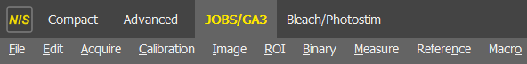
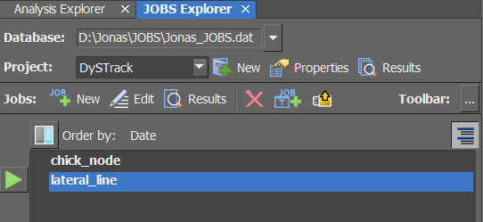
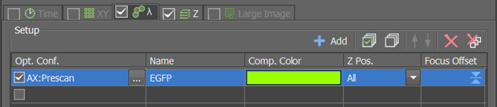

DySTrack on the Nikon AX R (NIS Elements)#
tl;dr
If you’ve done this many times before and just need a quick reminder:
Create target dir (on drive with enough free space)
Start DySTrack manager
conda activate dystrack python <path-to-config-file.py> <path-to-target-dir> [optional arguments]
Configure prescan and main scan Experiment Setups
Run desired JOBS definition and go through the wizard
Double-check that everything is ready, then launch
Ensure everything is running correctly
Before you start#
Ensure you have permission to use DySTrack on this microscope
Risk of damage
Modern microscopes are expensive machines, and automating them comes with an inherent risk of damage. Do not run DySTrack without permission from the microscope’s administrator, and always ask for help if you are unsure about something.
Confirm that DySTrack has been installed and tested
Otherwise, see Installation.
Confirm that a suitable image analysis pipeline for your experiment is available
See Available DySTrack pipelines for an overview of existing pipelines that come with the DySTrack repo. For information on how to develop your own custom pipeline (advanced), we recommend reviewing the Anatomy of DySTrack pipelines and Developing DySTrack pipelines sections.
Part 1: Start the DySTrack manager#
Important config details
By default, prescans on the AX R are saved in .tiff format, so ensure
that file_end : ".tiff" is set in the relevant config file (see step
3).
Tip
This works the same for all microscopes, regardless of manufacturer (aside from config details noted above).
Make a new target directory for your experiment
The DySTrack manager will monitor this directory, and experiment data will be saved there. Ensure the hard disk has sufficient free space and allows for sufficiently fast file writing for your use case.
Open a Minifoge prompt
Depending on how python was installed, you may instead need to open an “Anaconda Prompt” or a standard Windows command prompt.
Activate the environment in which DySTrack has been installed
Usually it is called
dystrack, so run:conda activate dystrack
Find/create the configuration file for your experiment
Config files are found in
DySTrack\runThey specify the image analysis pipeline to use
They can specify further parameters for the pipeline and the manager
To create a new config file, best copy an old one and modify it
Ensure that
file_startandfile_end(and where applicabletra_method) are set correctly
If you are a non-expert user, the configuration file for your type of experiment should be configured for/with you by a more experienced user and should not require further changes at runtime.
Additional information is found in the provided config files themselves.
Start the DySTrack manager session in your command prompt:
python <path-to-config-file.py> <path-to-target-dir> [optional arguments]
Tip
Instead of typing the entire file paths into the console, you can drag and drop the config file and the target directory into the console, which will automatically write out the full path.
If everything is configured correctly, you should see the following message:
DYSTRACK MANAGER SESSION STARTED! Monitoring target dir(s) for new files... Press <Esc> to terminate.
In addition, you should see a file called
dystrack_coords.txtappear in your target directory. The DySTrack manager will write detected coordinates to this file.
Part 2: Prepare the JOBS Definition#
DySTrack uses Nikon’s JOBS module for macro control within NIS Elements.
Ideally, JOBS Definitions are prepared before running any experiments and do not require changes at runtime. Therefore, if the JOBS Definition for your experiment is already prepared, you can skip to Part 3.
If you are not sure if this is the case, you can check by following these steps:
Enter the
JOBS/GA3tab (at the top):If this is unavailable, speak to an expert user / microscope administrator.
Check if the GA3 Script
AX_NISGA3_PointsExpose(or similar) is available in theAnalysis Explorer(middle-left).
Note that this is a necessary dependency for DySTrack JOBS Definitions!
Check if the JOBS Definition you plan to use is available in the
JOBS Explorer:
{kind=link}
{kind=link}
Warning
If the GA3 Script and JOBS Definitions are not already prepared, follow the instructions in this subsection of the DySTrack installation guide to import them.
Note that this is best done together with an experienced user or facility staff to ensure everything is set up correctly!
Tip
If you need to make changes to a JOBS Definition for your specific experiment, we strongly recommend making a copy of an existing JOBS definition before trying out any modifications on it.
Part 3: Configure acquisition settings#
The microscope and sample must be ready for this part.
Configure or reload the main scan Experiment Setup
The main scan produces the actual data of interest for the experiment.
It is usually a high-resolution, high-quality configuration with averaging optimized for SNR, high pixel density (Nyquist if needed), and multiple channels.
Side note: Main scan image data for a 3D time course can be quite large. Double-check that there is enough free disk space, i.e. roughly the size of a main scan stack times the number of samples (if multi-positioning) times the number of time points (plus some spare space for prescans and as a precaution to avoid slow-down of file writing).
Configure or reload the prescan Experiment Setup
The prescan is used for DySTrack to find coordinates.
To create a suitable prescan configuration, start with the main scan and trade off resolution and SNR for speed to the greatest extent allowed by the image analysis pipeline. Remove any averaging, substantially reduce pixel density, use only a single channel, and trade off laser power for gain.
Tip
Rename your Experiment Setups to reflect whether they are main scan or prescan settings.
Part 4: Start the JOBS workflow#
Enter the
JOBS/GA3tab (at the top):If this is unavailable, speak to an expert user / microscope administrator.
Go to the
JOBS Explorer:Select the JOBS Definition for your experiment and press the green “Play” button to open the JOBS wizard.
Select your target directory as
Alternative Storage Location
For the two radio buttons, keep the top option selected (all runs into specified folder). If you instead need to use automatically generated subfolders in your experiment, you must provide the
--recurse Trueoption when starting the DySTrack manager, otherwise it will not detect prescans placed in subfolders.If using multiple positions, set the positions

If using a single position, just
Addthe current position, as shown in the screenshot.Set the duration and acquisition period for your time course

Calculate sufficient time for prescan, image analysis (usually quick), and main scan (usually the bottleneck). Multiply by the number of positions when using multi-positioning and add a bit of buffer time.
Important
Ensure
Split Storage per Time pointis ticked!Configure the settings for the prescan
In the first ND Acqusition block, select your prescan Experiment Setup in the Lambda tab.
Next, configure the z-stack in the Z tab. The prescan should have a low z-resolution and wide z-range.
Important
The z-stack must be defined around the center; see buttons marked 5 and 6 in the step-by-step guide below!
Note
If using a Piezo stage, reset the Piezo (button marked
+) to ensure it is centered near your samples.For multi-positioning, issues with the piezo range may occur if samples are mounted at very different distances from the cover slip.
We recommend the following process to find good z-stack settings:
Go to range mode
Find and set the top of your stack; include 15-30% spare space past your sample (how much is needed depends on the sample and analysis pipeline)
Find and set the bottom of your stack; include 15-30% spare space past your sample
Double-click the central coordinates to move the focus to the center
Swap to centered mode
Click the
relativebutton.Set an appropriate step size (large for prescan) / step number (field marked 8; small for prescan)
Configure the settings for the main scan
In the second ND Acqusition block, select your main scan Experiment Setup in the Lambda tab, then configure the z-stack in the Z tab.
Proceed exactly as with the prescan, but now use a higher z-resolution (use Nyquist if desired) and with less spare space around the sample.
Important
Again, the z-stack must be defined around the center; see above.
Pause for a moment to mentally review whether everything is ready
Start the experiment
{kind=link}
{kind=link}
{kind=link}
Part 5: Look after your experiment#
Monitor the microscope for the first few time points to ensure everything is working as intended.
A prescan should be rapidly acquired and saved in the target directory. The DySTrack command line should then report detection of the prescan, execution of the image analysis pipeline, and then pushing of new coordinates.
NIS Elements will appear “frozen” while awaiting new coordinates from the DySTrack manager. As soon as the coordinates are written, it should “unfreeze” and trigger main scan acquisition, then move on to the next position / time point.
Tip
It’s useful to configure remote access to the microscope PC to periodically check in on the experiment.
After the experiment:
The DySTrack manager can be stopped by pressing
Escin the command lineThe microscope software and hardware should be shut down as usual
The main scan images/stacks for each position and time point are saved as separate files
Some advice on how to postprocess DySTrack data can be found here
Be sure to (process and) move data to a different storage location asap to avoid filling up the scope PC’s disk drives